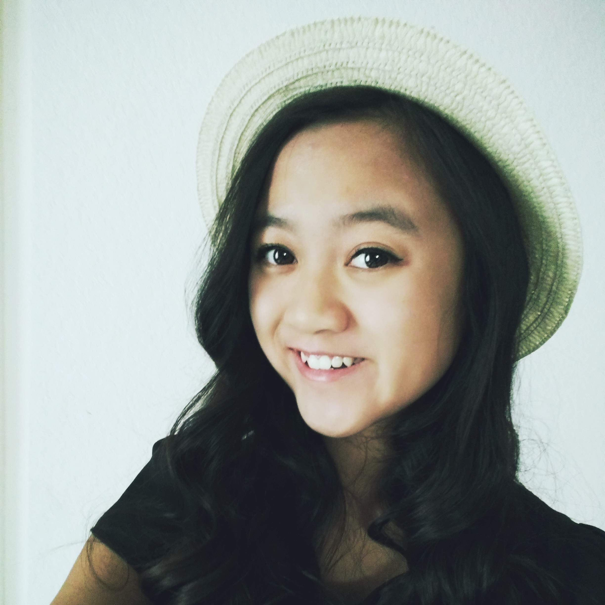

About Me
Welcome to my website! My name's Therese Do and I'm currently a Junior at Ruben S. Ayala High School. This site contains all my projects for AP Computer Science Principles which you can check out on my Portfolio page. I'm taking the class to understand coding and programming since this is a field I would like to explore alongside astronomy or astrophysics.